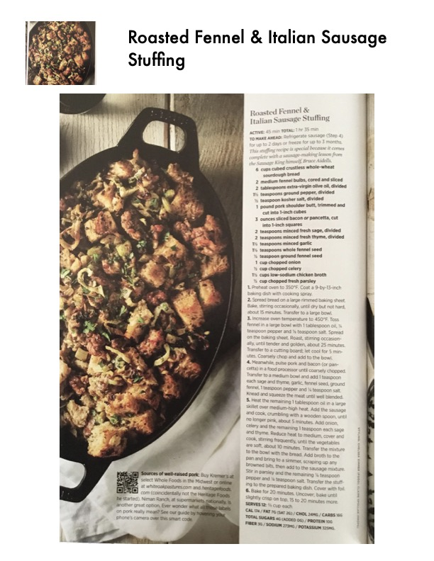

Roasted Fennel & Italian Sausage

Original cookbook page 41
Ingredients
- 6 cups cubed crustless whol
- 2 medium fennel bulbs, core
- 2 tablespoons extra-virgin of
- 1 pound pork shoulder butt,
- 3 ounces sliced bacon or par
- 2 teaspoons minced fresh sa
- 2 teaspoons minced fresh th
- 1 cup chopped onion
Instructions
- Preheat oven to 350°F. Coat a 9-by-13-inch baking dish with cooking spray.
- Spread bread on a large rimmed baking sheet. Bake, stirring occasionally, until dry but not hard, about 15 minutes. Transfer to a large bowl.
- Increase oven temperature to 450°F. Toss fennel in a large bow! with 1 tablespoon oil, % teaspoon pepper and % teaspoon salt. Spread on the baking sheet. Roast, stirring occasion- ally, until tender and golden, about 25 minutes. Transfer to a cutting board; let coo! for 5 min- utes. Coarsely chop and add to the bowl.
- Meanwhile, pulse Pork and bacon (or pan- cetta) in a food processor until Coarsely chopped. Transfer to a medium bowl and add 1 teaspoon each sage and thyme, garlic, fennel seed, ground fennel, 1 teaspoon Pepper and Y% teaspoon salt. Knead and squeeze the meat until well blended.
- Heat the remaining 1 tablespoon oil in a large skillet over medium-high heat. Add the sausage and cook, crumbling with a wooden spoon, until No longer pink, about 5 minutes. Add onion, celery and the remaining 1 teaspoon each sage and thyme. Reduce heat to Medium, cover and Cook, stirring frequently, until the vegetables are soft, about 10 minutes. Transfer the mixture to the bow! with the bread. Add broth to the Pan and bring to a simmer, scraping up any browned bits, then add to the Sausage mixture Stir in parsley and the remaining % teaspoon Pepper and % teaspoon salt. Transfer the stuff- ing to the prepared baking dish. Cover with foil
- Bake for 20 minutes, Uncover; bake until
Recipe #41 from collection